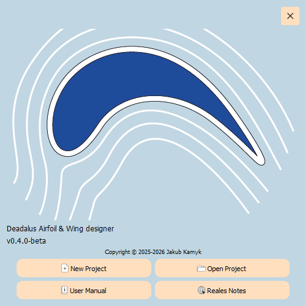

Parametric Wing Modeling
Define geometry through parameters for total design freedom.

Daedalus is a Python-based parametric CAD environment for exploring airfoil geometry and designing wings. User gets full flexibility over created geometry. It applies for both 2D and 3D design, which can be than exported to industry-standard formats like .dxf and .step.
Define geometry through parameters for total design freedom.
Generate both 2D airfoil curves or full 3D wing surfaces
Seamlessly export to CAD with support for .dxf and .step formats

Airfoil Designer inside DAEDALUS allows for parametric design of airfoils. A profile is established using 4 splines geometries for Pressure & Suction Side and Leading & Trailing Edges. Using parameters such as: chord, incidence, leading edge thickness, pressure side angle user can achieve any desired shape. It is also possible to display reference from an airfoil saved in selig format. Using Airfoil Designer it is possible to export to .dxf file format.
Wing Designer allows for creation of 3D wings using established profiles from Airfoil Designer and NURBS surfaces. A user can create:
By changing the parameters position, angle and scale can be adjusted. Additionally a connection type: G0, G1 can be defined between semgnets to allows linear or smooth surface flow. Using Wing Designer it is possible to export to .step file format*.
*Tested using CATIA V5R19, Inventor 2025, SolidWorks 2025


Since the last update there has been a true redesign underneath the Deadalus program. One changed triggered another. What started as just an improvement of the airfoil design process ended up with need to redesign whole wing structure. Redesigning geoemtries caused new challenges to appear. At the same time, it was decided to swith from no longeer supported PyQt5 to PyQt6. This an other [what felt like] small changes caused an avalange almost a year long.
It has been quite a fascinating time. On October 2025, I presented the first usable version of the Daedalus program: v0.3. For the first time it allowed for the absolute minimum required to design a 3D wing or 2D profile. With a basic tools and widgets it was possible to create a project. An interactive OpenGL viewport replaced MapPlotLib in Airfoil Designer and a viewport in Wing Designer works now more like industry standard.
01 / MISSION
Daedalus is a GNU program created by a single author, with help from awesome friends. In the pursuit of better aerodynamic designs, a niche was found.
Designing airfoils and wings in typical modern CAD software can be hard and far from pleasant. DAEDALUS was created to ease this process. It is aimed primarily at Formula Student colleagues, but can also be used for small aircraft.
DAEDALUS is free software: it promotes aerodynamics and helps creative minds move forward without being held back by software.
02 / LICENCE
DAEDALUS is free software. You can redistribute it and/or modify it under the terms of the GNU General Public License (GPL). This license grants people these freedoms:
- Use Daedalus for any purpose
- Distribute Daedalus
- Study and modify its source code
- Distribute changed versions of Daedalus
The GPL protects these freedoms by requiring shared modifications when the software is redistributed. This is commonly referred to as copyleft.
DAEDALUS is distributed in the hope that it will be useful, but WITHOUT ANY WARRANTY; without even the implied warranty of MERCHANTABILITY or FITNESS FOR A PARTICULAR PURPOSE.
The author is committed to preserving DAEDALUS as free software.